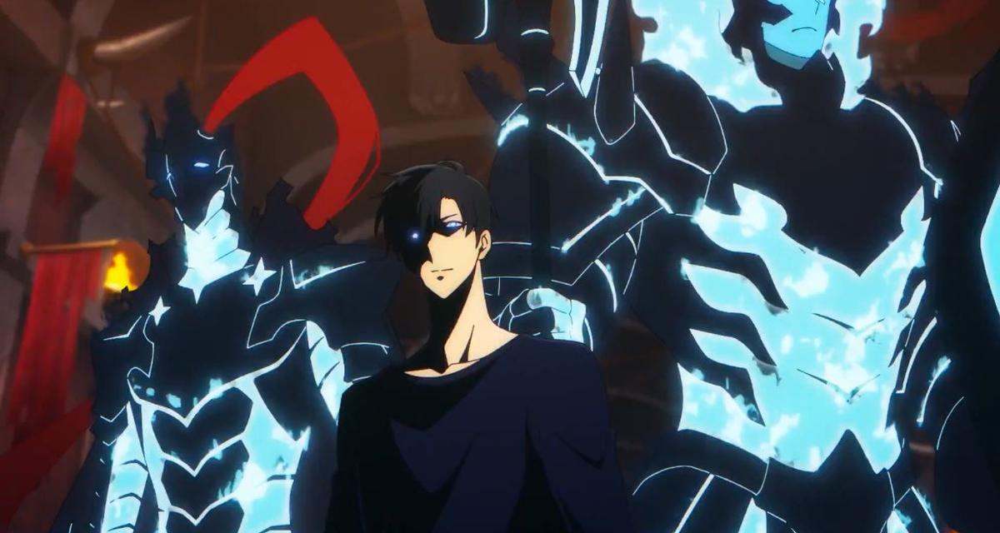

Satoru Gojo is widely regarded as the strongest Special Grade Jujutsu Sorcerer of his era.
For the first time in four centuries, he inherited both the Limitless and the Six Eyes, making him a once-in-a-generation prodigy.
Serving as a teacher at Tokyo Jujutsu High, Gojo uses his overwhelming power and influence to protect and train the next generation of sorcerers.
This is our first fight of the webpage Gojo vs. Rimuru!!
Remaining opponents
Son Goku

Sung Jinwoo
Yogiri Takatou
A quick look at our fighter's Strengths!
Gojo's Strategic & Analytical Powers
Six Eyes: Grants perfect cursed energy control, near-zero energy loss, and supreme perception of techniques.
Tactical Genius: Rapidly adapts mid-battle, counters complex abilities, and devises strategies under pressure.
Cursed technique-Limitless
Infinity: Automatically slows/blocks attacks, making Gojo untouchable.
Blue (Attraction): Creates a vacuum, crushing targets by pulling space together.
Red (Repulsion): A devastating force that blasts enemies away with overwhelming energy.
Hollow Purple: Combines Blue + Red into an erasure beam that deletes everything in its path.
Domain Expansion
Unlimited Void: Overwhelms opponents’ minds with infinite information, leaving them paralyzed and defenseless
Reverse Cursed Techinique
Self-Healing:Instantly regenerates fatal injuries, keeping Gojo alive in sustained battles.
Techinique Replenshinment:Can restore even burned-out techniques, an unprecedented feat.
Physical & Combat Mastery
Hand-to-Hand Combat: Martial arts on par with ancient sorcerers, able to overwhelm Sukuna physically.
Immense Strength: Tears apart special-grade curses with brute force.
Immense Speed & Reflexes: Moves faster than the eye can track, consistently outpacing top fighters.
Immense Endurance: Can fight through fatal wounds and survive Sukuna’s Malevolent Shrine.
Black Flash: Enhances strikes by 2.5× with precise cursed energy timing.
Barrier & Anti-Domain Techniques
Curtains: Isolates areas for combat or concealment.
Falling Blossom Emotion: Counterattacks domain techniques upon contact.
~Now on to the Verdict~
Although Gojo is known as the strongest Sorcerer and his Infinity, Six Eyes, Unlimited void scales him higher than most humans and curses.
Rimuru is on a whole nother scale entirely! His reality erasure, conceptual Nullifications, and infinite resurrection means Gojo's techniques can't permanetly put him down.
With help from Raphael Rimuru can quickly analyze infinity and adapt and eventually bypass or devour Gojo's cursed techniques.
Although I lost watch the first episode of my show